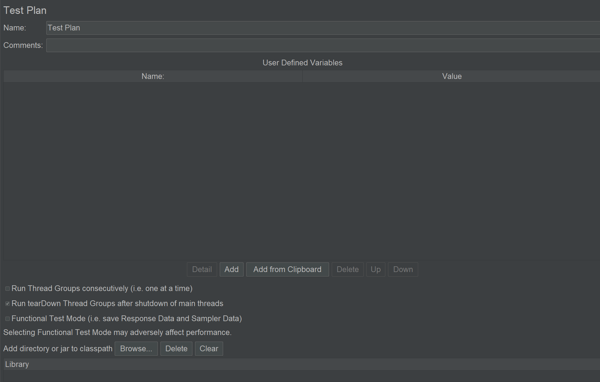
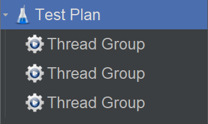
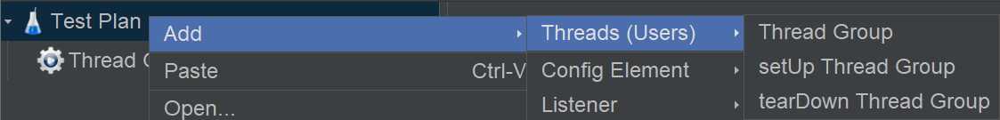

5 JMeter测试计划配置项解析¶

测试计划（Test Plan），是JMeter目录树的初始根节点，它的编辑区如下：

Name¶
带有业务含义的名字。
Comments¶
备注。
User Defined Variables¶
用户自定义变量，实际上就是全局变量。
表格共两列，第一列是Name变量名，第二列是Value变量值。表格下方的功能按钮，用来对表格进行增删改查和上下移动，还能直接从剪贴板添加。定义好的变量通过${}格式来使用，比如变量a值为1，使用时写作${a}。
这个地方定义的实际上是字符串常量，比如刚才已经定义了一个变量名a变量值1，再定义变量名b变量值${a} + 1，b的实际值不是整型2而是字符串"${a} + 1"！
Run Thread Groups consecutively¶
控制多个线程组是顺序执行或并行执行，比如：

如果勾选了这个选项，顺序执行：前一个线程组执行完以后，再执行下一个线程组。
如果不勾选这个选项，并行执行：执行没有先后顺序，结果是随机的。
Run tearDown Thread Groups after shutdown of main threads¶
线程组包括初始化线程组和清理线程组：

这个选项默认已勾选，会执行清理线程组。
Funtional Test Mode¶
没用，不学。
Add directory or jar to classpath¶
要搞懂这个，得先学习Java中的classpath和jar包。Java源文件是.java文件，编译后是.class文件。Java的执行器JVM（Java虚拟机），只能执行.class文件。为了让JVM找到那个想要的.class文件，需要把.class文件路径添加到classpath中。为了方便管理，会把多个.class文件打成一个包，变成一个.jar文件，叫做jar包。
JMeter是用Java写的，可以添加jar包扩展功能，添加入口有2个：
第一个入口是测试计划此选项，Add directory or jar to classpath。
推荐！第二个入口是把jar包放入
lib/ext目录。